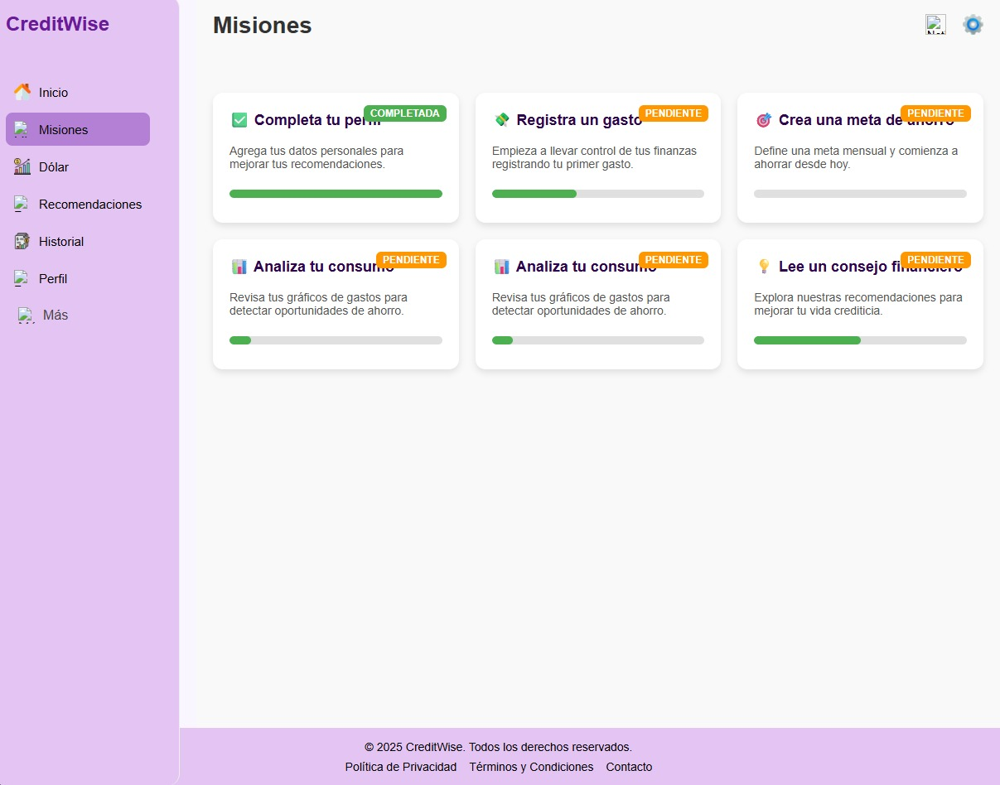

Características del Sistema¶
CreditWise ofrece diferentes herramientas diseñadas para ayudarte a mejorar tu vida financiera de forma práctica, educativa y entretenida.
A continuación, encontrarás la descripción detallada de cada sección y su funcionamiento.
Misiones Financieras¶
Las misiones financieras son actividades interactivas creadas para que aprendas sobre crédito, ahorro, presupuestos, endeudamiento y más.
Cómo acceder: 1. Ingresa con tu usuario a la plataforma. 2. Desde el menú principal, selecciona “Misiones”. 3. Verás una lista de misiones disponibles, cada una con su nivel de dificultad y tema. 4. Haz clic en una misión para iniciar.
Cómo funcionan: - Cada misión contiene retos, preguntas y tareas financieras simuladas. - Al completarlas, obtienes puntos de experiencia (XP) y logros. - Las misiones desbloquean consejos personalizados según tus resultados.
Objetivo: Aprender de forma dinámica sobre finanzas personales y mejorar tus hábitos financieros.
—
{kind=link}
Consejos Crediticios¶
Los consejos crediticios son recomendaciones automáticas generadas por el sistema según tus avances y hábitos financieros.
Cómo consultarlos: 1. En el menú lateral, selecciona “Consejos”. 2. Verás una lista de sugerencias personalizadas para ti. 3. Cada consejo tiene un botón de “Ver más” donde se explica cómo aplicarlo.
Tipos de consejos: - Mejora de puntaje crediticio. - Optimización de pagos. - Estrategias de ahorro. - Reducción de gastos innecesarios.
Recomendación: Consulta tus consejos al menos una vez por semana para seguir mejorando tus hábitos financieros.
—
Valor del Dólar¶
La sección de Valor del Dólar te muestra la tasa actualizada del dólar en tiempo real.
Pasos: 1. En el panel principal, selecciona “Dólar”. 2. Automáticamente se mostrará la tasa de cambio COP/USD actual. 3. Puedes consultar también un gráfico histórico de variaciones del dólar.
Utilidad: Esta función te ayuda a entender cómo los cambios del dólar pueden influir en tus finanzas personales.
—

Historial de Progreso¶
En esta sección puedes visualizar todo tu recorrido dentro de CreditWise.
Incluye: - Misiones completadas. - Puntos obtenidos. - Consejos aplicados. - Logros alcanzados.
Cómo acceder: 1. Haz clic en “Historial”. 2. Se mostrará una línea de tiempo con tus actividades.
Ventaja: Te permite medir tu crecimiento financiero y educativo a lo largo del tiempo.
—
Gráficos de Análisis¶
CreditWise genera gráficos dinámicos con tus estadísticas de consumo, ahorro y desempeño en misiones.
Cómo acceder: 1. Desde el menú principal, selecciona “Gráficos”. 2. Visualiza los datos organizados por categorías (ahorro, gastos, logros, progreso).
Tipos de gráficos: - Barras comparativas. - Líneas de progreso. - Porcentajes de cumplimiento.
Consejo: Revisa estos gráficos semanalmente para evaluar tus hábitos financieros.
—
Sistema de Logros¶
Los logros son recompensas virtuales que obtienes por tus avances dentro de CreditWise.
Ejemplos: - “Ahorrista del mes”: por cumplir metas de ahorro. - “Crédito responsable”: por mantener un buen puntaje. - “Explorador financiero”: por completar todas las misiones de un nivel.
Dónde verlos: 1. Accede a la pestaña “Logros”. 2. Verás tus insignias obtenidas y las que aún puedes conseguir.
—
Recomendaciones de Mejora¶
La plataforma analiza tu comportamiento y genera recomendaciones automáticas para mejorar tu gestión del dinero.
Ejemplo: > “Notamos que tus gastos en entretenimiento aumentaron. ¿Deseas recibir tips para equilibrar tu presupuesto?”
Estas sugerencias aparecen en tu panel o se envían por notificación.
—